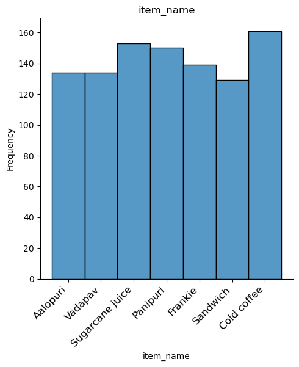

File uploaded successfully
File Name: {{name}}
Column Names:
Select the columns you want to use in your graph
{% for data_head in column %} {% endfor %}Graph Types:
Select the graph type you want to use

Graph Maker
File uploaded successfully
File Name: {{name}}
Select the columns you want to use in your graph
{% for data_head in column %} {% endfor %}Select the graph type you want to use